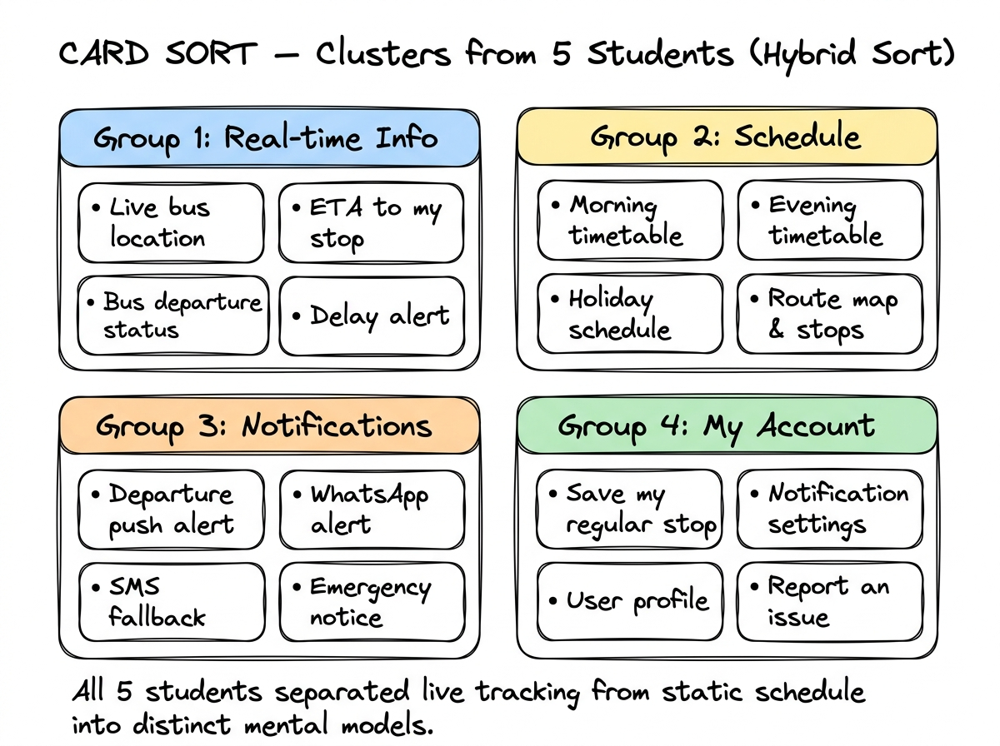
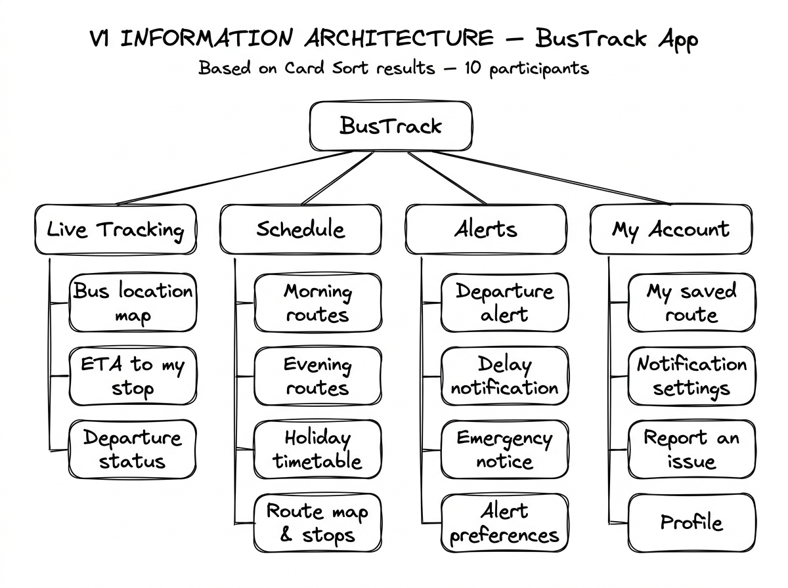

What I noticed before anything else
These are raw notes from watching how students around me actually deal with the bus situation, before I conducted any formal interviews. I kept these informal on purpose so I could come to the research without too many assumptions baked in.
Saw three students standing at the stop near the admin block for a long time. One of them was constantly messaging on WhatsApp. When I asked, he said he was trying to figure out if the bus had already left. He did not know. Nobody did.
A girl from the hostel block sprinted out at 5:40 PM even though the bus is supposed to leave at 6:00 PM. She said she leaves early every day because once you miss it, you are stuck. She has missed it twice already this term.
We came across the timetable that was being circulated in our WhatsApp friend group. It had the schedule but no information about delays or whether the bus was even running that day. Someone had crossed out one timing and written a new one. Nobody seemed to fully trust what was in it.
We ended up going to the watchman at Gate 1 and asking him directly about the bus timings. He knew roughly when it usually arrives but said it varies. He was helpful but this is not a system. You have to physically walk to the gate and ask someone who is guessing.
Two students booked an auto together because they were not sure the bus was running. It cost them 300 rupees each, 600 total for a one-way trip. They later found out the bus had run on time that day. They were annoyed but said they would probably do the same thing again next time because the uncertainty is too stressful to risk it.
The problem is not that students do not care or that they are disorganised. The problem is that there is genuinely no reliable way to know. Every workaround they have built, walking to the gate to ask the watchman, checking a circulated WhatsApp timetable that may be outdated, booking autos to avoid the risk, is a response to that one missing piece of information: has the bus left?
Empathy and Definition
Understanding who the user actually is, what they go through, and where the experience breaks down the most.
1A - Proto-Persona (Before Research)
Before talking to anyone, I wrote down who I assumed the user was. This is a rough first sketch based on my own observations, not real data.
Reach class on time. Plan his day around the bus. Not waste time standing at a stop.
Never knows if the bus has left. Ends up waiting 30 to 45 minutes with no information.
Asks seniors. Checks WhatsApp. Leaves early just to be safe.
Uses WhatsApp, Google Maps, UPI every day. Comfortable with apps.
"My assumption going in: this person just wants to know if the bus has left yet. Not a full schedule, not a map. Just that one answer."
1B - User Research: Three Interviews
I spoke to three students who regularly use the government bus. Each conversation was about 10 to 15 minutes. I asked about their routine, what information they wished they had, and the worst experience they remembered with the bus.
"I once stood at the stop for an hour and then found out the bus had left 40 minutes earlier. Nobody tells you anything. I just WhatsApp my batchmate who lives near the main road and hope he saw it."
Key finding: Peer-to-peer messaging is the only real-time information channel. No official source exists.
"The timetable that goes around on WhatsApp is wrong half the time. I have started leaving 20 minutes earlier than I need to, just to feel safe. It has become a daily tax on my time."
Key finding: Students absorb the cost of uncertainty by leaving earlier than needed. They see it as unavoidable.
"I don't know which senior to ask and the WhatsApp timetable that gets shared is confusing. The first week I missed the bus twice. Now I just take an auto even though it's expensive. I cannot afford the stress of guessing every time."
Key finding: Even students with some context struggle. The circulated timetable creates false confidence and still leaves them stuck when the bus is late or cancelled.
1C - True User Persona (After Research)
After the interviews, I updated the persona. The biggest shift: the core need is not live tracking. It is the confidence to make a decision about when to leave.
Know exactly when to leave his room. Avoid standing in the sun. Get to class without the anxiety.
The WhatsApp timetable circulated in friend groups is often outdated or wrong. No official real-time channel exists. Even asking the watchman at the gate is just an educated guess.
WhatsApp senior groups, batchmates near the main road, leaves about 20 minutes early as a buffer.
Not "where is the bus" but simply: has it left yet?
"I just want to know, did it leave? Is it on the way? That is all. Everything else I can figure out."
- Arjun, composite from interview data
1D - Empathy Map
Built from interview data. What Arjun says out loud, thinks privately, does every day, and how he actually feels through this experience.

Empathy Map - drawn in Excalidraw, based on data from 3 interviews
1E - User Journey Map with Emotion Line
Scenario: Arjun needs to catch the 6:00 PM evening bus on a Tuesday after his last lecture. The map traces his emotional state across seven stages.

User Journey Map - Arjun catching the evening bus, emotion line shown at the bottom
1F - Core Pain Point
The worst moment is Stage 4: waiting at the bus stop with no information at all. By this point the student has already committed. They left their room, walked to the stop, and now they have no idea whether the bus is two minutes away or already gone. They cannot go back. They cannot decide. They just have to wait. This is not a schedule problem. It is an information vacuum at the exact moment when a decision can no longer be undone.
Every workaround students have built, leaving early, messaging seniors, booking autos, exists because of this one gap. The opportunity is to close it.
1G - User Stories
Four user stories written from Arjun's perspective, each targeting the core pain point directly.
-
User Story 01
As a student waiting at the bus stop, I want to see whether the bus has departed from its origin and roughly when it will reach my stop, so that I can decide whether to keep waiting or make other arrangements without having to ask anyone.
-
User Story 02
As a student still in my hostel room, I want to get a notification when the bus leaves from the starting point, so that I can calculate when to leave and not stand at the stop for more than five minutes.
-
User Story 03
As a new student who does not know the seniors yet, I want to see the bus schedule and its current status in one place, so that I do not have to depend on informal networks or spend money on autos because of missing information.
-
User Story 04
As a student who has already missed the bus once this week, I want to report or confirm that the bus is on the road, so that other students at the stop get a real-time heads up when official tracking is not available.
Ideate and Evaluate
Moving from understanding the problem to structuring the solution. What does the product need to contain, how do users mentally organise it, and does the structure actually hold up when tested?
2A - Feature and Content Inventory (17 Items)
Based on the user stories and interview findings, I listed everything the product might need to contain. These 17 items became the cards for the card sort.
| # | Feature or Content Item | Where it came from |
|---|---|---|
| 01 | Live bus location on map | User Story 01 |
| 02 | ETA to my specific stop | User Story 01 |
| 03 | Bus departure status - has it left? | User Story 01 and 02 |
| 04 | Departure notification or push alert | User Story 02 |
| 05 | Delay or cancellation alert | User Story 02 |
| 06 | Morning route timetable | User Story 03 |
| 07 | Evening route timetable | User Story 03 |
| 08 | Holiday or special day schedule | User Story 03 |
| 09 | Route map and all stops | User Story 03 |
| 10 | WhatsApp or SMS alert option | User Story 02 |
| 11 | Emergency or sudden cancellation notice | User Story 02 |
| 12 | Peer sighting report - I can see the bus | User Story 04 |
| 13 | Is the bus crowded? Live crowd info | Interview with Yash Badgur |
| 14 | Save my regular stop or route | Usability best practice |
| 15 | Notification preferences and timing | User Story 02 |
| 16 | Feedback or report an issue | User Story 04 |
| 17 | User profile and settings | Basic app requirement |
2B - Card Sort: Method and Patterns
I ran a Hybrid Card Sort with 5 students from the hostel. I used printed cards and gave participants 4 initial category names while letting them adjust or create groups if needed. Each session took around 15 minutes.

Card Sort clusters - 5 students, Hybrid Sort, drawn in Excalidraw
Key Patterns Found
- Strongest agreement: All 5 students consistently separated live tracking from the static schedule. They treated them as completely different things. One answers right now, the other answers in general.
- Naming insight: Most participants disliked the word "Alerts." They preferred "Notifications" because it felt less alarming and more like a helpful heads up.
- Disputed card: "Peer sighting report" was placed in 4 different groups across participants. It did not fit any single mental model cleanly.
- Settings confusion: "Notification preferences" was split between Alerts and My Account. I moved it to My Account to be consistent with how settings usually work.
- Quick status need: 3 out of 5 students asked if there could be a quick shortcut to just check if the bus is running, without navigating through menus. This shaped the V2 IA.
2C - V1 Information Architecture
Built directly from the card sort clusters. Four top-level sections matching the four dominant groupings.

V1 IA - built from card sort results, 4 top-level sections, drawn in Excalidraw
2D - Tree Test: What Failed and What Changed
I ran a Tree Test with 5 participants using the V1 IA. Each person was given two tasks and asked to navigate the text-only tree to find the right section, no UI, just the menu structure.
Task 1: You want to quickly check if the bus has already left.
Task 2: You want to change when you receive bus departure notifications.
- 3 out of 5 went to Schedule first for Task 1, expecting a quick status answer there
- 2 out of 5 looked inside Alerts for notification preferences, not My Account
- The Alerts label confused people as they were unsure if it was for settings or for incoming alerts
- No fast path for the most common action: is the bus running right now
- Added Quick Status as a new top-level section, the first thing you see
- Renamed Alerts to Notifications to reduce ambiguity
- Moved Alert preferences into My Account where users naturally looked for settings
- Simplified Live Tracking by moving ETA into Quick Status instead
![V2 Information Architecture tree for BusTrack. Root: BusTrack. Five branches: Quick Status marked as new with is bus running, next departure time, my stop ETA. Live Tracking with bus location map, departure status, route map and stops. Schedule with morning routes, evening routes, holiday timetable. Notifications renamed from Alerts with departure alert, delay notification, emergency notice. My Account with my saved route, notification settings, alert preferences, report an issue, profile. A sticky note says: Tree Test finding, users looked for quick status first, so it was added as a top-level section.](images/ia_tree_v2.jpg)
V2 IA - updated after Tree Test, 2 structural changes made, drawn in Excalidraw
Prioritization
With a tested IA in hand, the question becomes: what actually goes into the MVP? And how do you decide when two features both feel essential?
3A - MoSCoW Prioritization
All 17 features sorted using the MoSCoW method. Hard limit: only 4 Must-Haves. Every Must-Have was tested against one question: if this is missing, does the core pain point go unsolved?
- Bus departure status - has it left?
- ETA to my stop
- Departure push notification
- WhatsApp or SMS alert integration
- Live bus location on map
- Morning and evening timetable
- Delay or cancellation alert
- Save my regular stop
- Notification preferences
- Route map and all stops
- Holiday timetable
- Peer sighting report
- Emergency notice system
- Feedback and report an issue
- Live crowd or bus capacity info
- User profile and social features
- Campus map integration
Why WhatsApp or SMS as a Must-Have? Research showed students already use WhatsApp to get bus information informally. A notification through WhatsApp has almost no learning curve and reaches students even if they have not installed a separate app. This was the most debated 4th slot, competing with Live Crowd Info. The DFV Matrix below settled it.
3B - DFV Matrix: Deciding the 4th Must-Have
The final Must-Have slot came down to two features: WhatsApp Alert Integration vs. Live Crowd Info. Both had supporters. I used a DFV Matrix, scoring Desirability, Feasibility, and Viability from 1 to 5 to make the decision less subjective.

DFV Matrix - scored 1 to 5 per criterion, drawn in Excalidraw